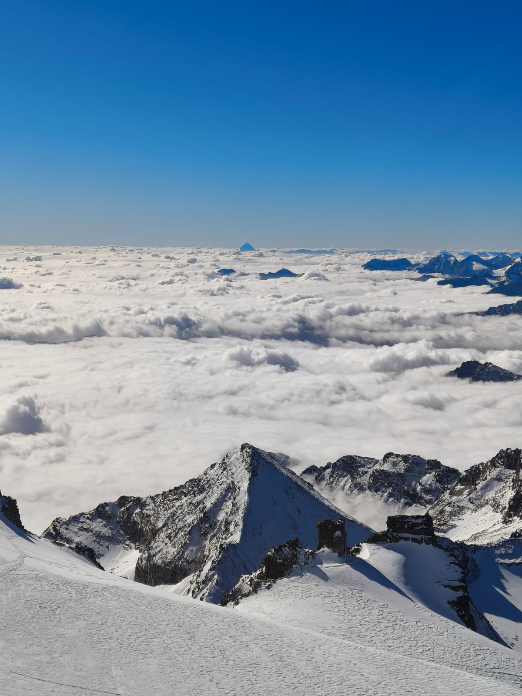
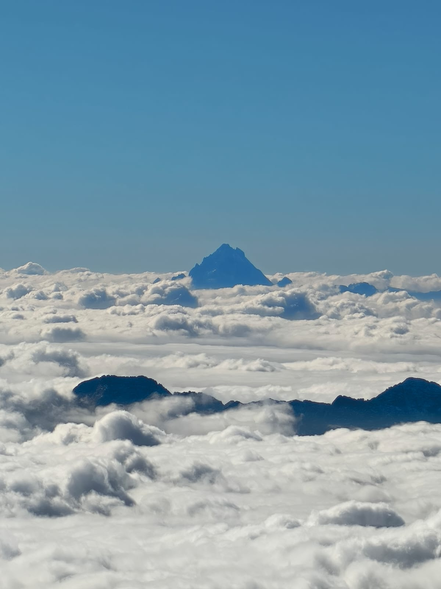

Safety framework
Safety is a system of decisions, habits, and backup plans. I use this page as a pre-trip check to keep winter objectives conservative, clear, and partner-friendly.
Non-negotiable: If conditions exceed the group's comfort or skill level, turning around is a successful day.
Cold injury prevention
- Stay drySweat management is warmth management. Adjust layers before you are soaked.
- Hands and feet checksWatch dexterity, numbness, and pressure points before they become injuries.
- Stop-layer disciplinePut insulation on as soon as movement stops.
Navigation and exposure risk
- Treeline rulesSet wind and visibility thresholds before the hike starts.
- Terrain selectionChoose low-consequence options when conditions are uncertain.
- Turn-around triggersUse time, weather, energy, and traction limits as hard decision points.
Emergency essentials
This is the list I would review before every winter outing and expand as the site grows.
- Insulation backupPuffy layer, spare gloves or mitts, dry hat, and extra face protection.
- Light and powerPrimary headlamp, backup light, and a charged battery pack.
- NavigationOffline maps, route notes, compass, and a backup plan if the phone fails.
- First aidBlister care, wraps, medications, and basic trauma supplies.
- Shelter and fireEmergency bivy, lighter, matches, and a small fire-starting kit.

